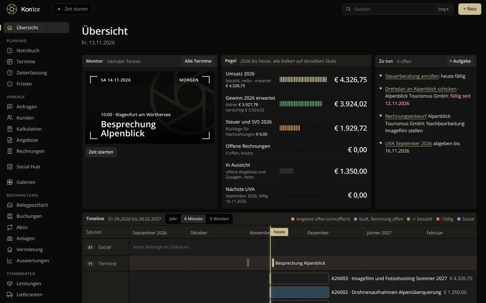
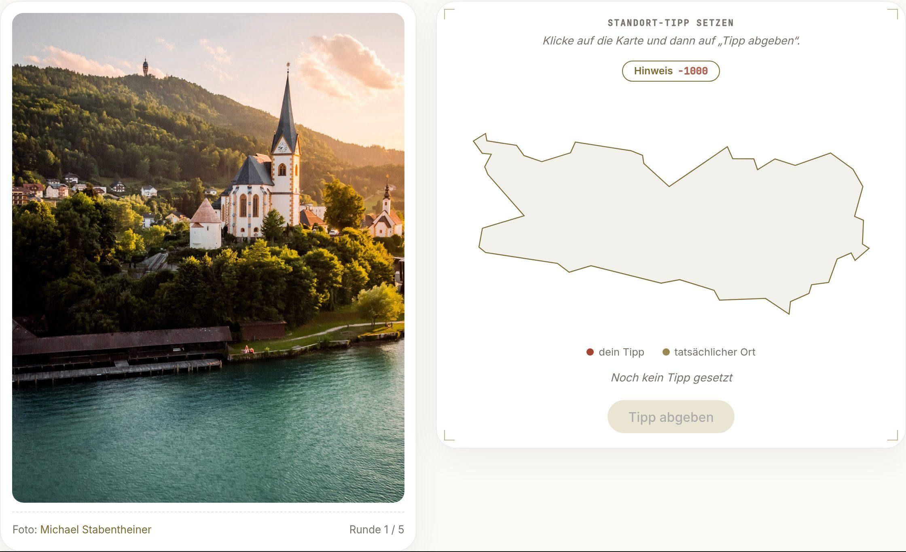

Gestaltung nach Ihrer Marke
Farben, Schrift und Bildsprache aus Ihrem Corporate Design. Gibt es noch keines, entwickeln wir es mit Ihnen, wie das CI dieser Website.
Start › Webdesign Kärnten
Webdesign · Klagenfurt, Villach, Kärnten
Sie möchten Ihre Website erstellen lassen oder die bestehende Homepage erneuern? Wir gestalten und programmieren schnelle, klare Websites für Unternehmen und Tourismusbetriebe in Klagenfurt, Villach und ganz Kärnten, mit Texten, Fotos und SEO aus einer Hand.
Was Sie bekommen
Eine gute Website sieht nicht nur gut aus. Sie lädt schnell, erklärt in Sekunden, was Sie anbieten, wird bei Google gefunden und führt Besucher zur Anfrage.
Farben, Schrift und Bildsprache aus Ihrem Corporate Design. Gibt es noch keines, entwickeln wir es mit Ihnen, wie das CI dieser Website.
Die meisten Besucher kommen über das Handy. Wir optimieren Bilder, Schriften und Videos so, dass Ihre Seite auch unterwegs sofort lädt.
Suchbegriffe je Seite, sprechende Titles und Beschreibungen, saubere Überschriften, strukturierte Daten und Sitemap. Mehr dazu unter SEO-Optimierung.
Auf Wunsch schreiben wir die Texte und liefern Fotos, Imagefilm und Luftaufnahmen aus eigener Produktion über michaelstabentheiner.at.
WordPress, wenn Sie selbst Inhalte pflegen wollen. Eine schlanke, statische Website, wenn Tempo und geringe Wartung wichtiger sind.
Schriften lokal statt von Google, Cookie-Einwilligung, Impressum und Datenschutzerklärung als Grundlage, abgestimmt auf Ihre Website.
Für wen
Firmenwebsite mit Leistungen, Referenzen, Karriereseite und Kontaktformular, damit Kunden und Bewerber Sie finden.
Stimmungsvolle Bilder, klare Angebote, Wege zur Buchung und Seiten für Ausflugsziele und Regionen. Unsere Fotos kennen Kärnten.
Eine übersichtliche Homepage mit Leistungen, Einzugsgebiet und schneller Anfrage, dazu das Google-Unternehmensprofil.
Ablauf
Ziele, Zielgruppe, Inhalte und Suchbegriffe: Wir klären, was Ihre Website leisten soll und welche Seiten sie braucht.
Seitenstruktur und Gestaltung der wichtigsten Seiten, abgestimmt auf Ihre Marke. Sie geben frei, bevor wir umsetzen.
Programmierung, Texte, Fotos, SEO-Grundlagen und Tests auf Computer, Tablet und Handy.
Online-Stellung, Weiterleitungen alter Adressen, Google Search Console, danach Wartung und neue Inhalte.
Beispiele

Foto- und Videoproduktion: neues Corporate Design, Seitenstruktur mit Leistungs-, Orts- und Ratgeberseiten, Ladezeit am Handy von 64 auf 96 Punkte.

Diese Website: schlank gebaut, ohne Baukasten, mit lokalen Schriften, strukturierten Daten und einer großen Referenzseite.

Ein Browserspiel als Beispiel für Gamification: Fotos aus Kärnten, Karte, Punkte, am Handy spielbar.
Häufige Fragen
Das hängt vom Umfang ab: Anzahl der Seiten, Texte, Fotos, Mehrsprachigkeit und Funktionen wie Buchung oder Shop. Nach dem Erstgespräch bekommen Sie ein verbindliches Angebot, in dem genau steht, was enthalten ist.
Ein One-Pager ist meist in wenigen Wochen online, ein größerer Firmenauftritt braucht entsprechend länger. Den größten Einfluss haben Texte und Fotos; die können wir auf Wunsch gleich mitliefern.
Ja, wenn Sie das möchten, bauen wir die Website mit WordPress, damit Sie Texte und Bilder selbst ändern können. Für Seiten, die selten geändert werden, empfehlen wir oft eine schlanke, besonders schnelle Website, die wir für Sie pflegen.
Nein. Unser Studio liegt in Köttmannsdorf bei Klagenfurt; wir betreuen Unternehmen in ganz Kärnten, etwa in Villach, Spittal oder am Wörthersee, und in ganz Österreich. Vieles lässt sich online besprechen, für Fotos und Videos kommen wir vor Ort.
Wir bauen jede Website von Anfang an für Suchmaschinen: schnelle Ladezeit, saubere Struktur, passende Suchbegriffe, Titles und Beschreibungen, strukturierte Daten und Sitemap. Für mehr Sichtbarkeit bieten wir zusätzlich laufende SEO-Betreuung an.
Website erstellen lassen
Erzählen Sie uns, was Ihre Website können soll. Wir melden uns innerhalb von 24 Stunden mit den nächsten Schritten.